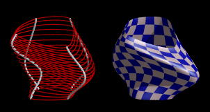

As stated on the POV-Ray website;
The Persistence of Vision Raytracer is a high-quality, totally free tool for creating stunning three-dimensional graphics. It is available in official versions for Windows, Mac OS/Mac OS X and i86 Linux. The source code is available for those wanting to do their own ports.
A package with several include files, all intended for generating mesh2 objects, so POV-Ray 3.5 is required. Also there are demo-scenes that show the use of every include file. The include files, their functions and use, are listed below.
A general include file, used by all other include files in the package. Contains the BuildWriteMesh2() and some helper macros for internal use. Currently writes include files with a mesh2() object or arrays (.arr files), Wavefront .obj files and .pcm files for use with Chris Colefax' Compressed Mesh Macros.
Have a look at the makemesh.inc code
BuildWriteMesh2( VecArr, NormArr, UVArr, U, V, FileName )
mesh2 object based on 3 input arrays, the number of quads in u and v direction and a filename.
Parameters:
VecArr
NormArr
UVArr
uv_vectors.
U
u-direction.
V
v-direction. Based on the u and v values the face_indices of the triangles in the mesh are calculated.
FileName
.obj' a Wavefront objectfile will be written..pcm' a compressed mesh file is written..arr' an include file with arrays to build a mesh2 from.mesh2 object will be written..obj', '*.pcm' or '*.arr' file as POV-Ray can not read them directly. In this case a new mesh will be generated, but the existing files will _not_ be over-written.
Have a look at the param.inc code
FromU(A), ToU(A), FromV(A), ToV(A)
Parametric() macro. They are used when a value should be approximated, but not reached.
Parameters:
A
Parametric(__Fx, __Fy, __Fz, <UVmin>, <UVmax>, Iter_U, Iter_V, FileName)
Parameters:
__Fx, __Fy, __Fz
UVmin
uv-rectangle, <u min, v min>.
UVmax
uv-rectangle. These vectors are the range within which the surface is calculated.
Iter_U
u range.
Iter_V
v range.
FileName
.obj' a Wavefront objectfile will be written..pcm' a compressed mesh file is written..arr' an include file with arrays to build a mesh2 from.mesh2 object will be written..obj', '*.pcm' or '*.arr' file as POV-Ray can not read them directly. In this case a new mesh will be generated, but the existing files will _not_ be over-written.
Use:
At the top of your scene-file put:
#include "param.inc"
Set up a set of parametric functions, using the function(){} statement. A unit sphere may look like this:
#declare R=1;
#declare F1=function(u,v){R*sin(v)*cos(u)}
#declare F2=function(u,v){R*cos(v)}
#declare F3=function(u,v){R*sin(v)*sin(u)}
Now the functions can be used in an object:
object {
Parametric (
F1, F2, F3,
<0, FromV(0)>, <pi, 2*pi>,
20, 10, ""
)
pigment {rgb 1}
finish{specular 0.3}
}
The functions don't need to be declared first, they can be put directly in Parametric()
object {
Parametric (
function(u,v){R*sin(v)*cos(u)},
function(u,v){R*cos(v)},
function(u,v){R*sin(v)*sin(u)}
<0, FromV(0)>, <pi, 2*pi>,
20, 10, ""
)
pigment {rgb 1}
finish{specular 0.3}
}
Note the use of the macro FromV() to start the v-range with. This means that the range is specified as 0 < u <= pi. The minimum will get close to, but not reach the value. The three other macros for this are ToU(), FromU() and ToV(). They have to be used when the equations can not be solved for the boundaries.
The resolution of the mesh is set with Iter_U and Iter_V, the amount of steps by which the u and v ranges are divided. The total amount of triangles calculated will be Iter_U*Iter_V*2.
If you want to save the resulting mesh to a file, enter a filename in the macro.
Trouble shooting:
Parse Error: cannot normalize zero-length vector.
u and v boundaries are specified the right way? Should all values be included, or should FromU() ToV() etc. be used?
Parse Error: No matching } in 'smooth_triangle', camera found instead
Paramcalc(<UVmin>, <UVmax>, Iter_U, Iter_V, FileName)
param.inc, here the calculations for the parametric surface happen. Parametric() is just a small frontend macro to make it look more like POV-Rays internal parametric object. Paramcalc can be used directly. Actually it has to be used directly when the surface has to be build from macros instead of functions. Paramcalc() will try to build a surface from macros or declared functions with the names __Fx, __Fy and __Fz. The uv_coordinates for texturing the surface come from the square <0,0> - <1,1>
Parameters:
UVmin
uv-rectangle, <u min, v min>.
UVmax
uv-rectangle. These vectors are the range within which the surface is calculated.
Iter_U
u range.
Iter_V
v range.
FileName
.obj' a Wavefront objectfile will be written..pcm' a compressed mesh file is written..arr' an include file with arrays to build a mesh2 from.mesh2 object will be written..obj', '*.pcm' or '*.arr' file as POV-Ray can not read them directly. In this case a new mesh will be generated, but the existing files will _not_ be over-written.
Use:
At the top of your scene-file put:
#include "param.inc"
Set up a set of macros that wil be the base of the parametric surface. The names of the macros have to be: __Fx, __Fy and __Fz. A unit sphere may look like this:
#declare R=1; #macro __Fx(U,V) R*sin(V)*cos(U) #end #macro __Fy(U,V) R*cos(V) #end #macro __Fz(U,V) R*sin(V)*sin(U) #end
Note that you can't use lower case u and v in the macros. Now the macros can be used to create an object:
object {
Paramcalc (
<0, FromV(0)>, <pi, 2*pi>,
20, 10, ""
)
pigment {rgb 1}
finish{specular 0.3}
}
p_umbilic.pov shows various ways of using Parametric() and Paramcalc()
Have a look at the twovar.inc code
TwoVarSurf( __Fuv, Urange, Vrange, Iter_U, Iter_V, FileName )
mesh2 surface of a function with two variables (u,v). The uv_coordinates for texturing the surface come from the square <0,0> - <1,1>
Parameters:
__Fuv
Urange
u.
Vrange
v. These are the ranges within which the surface is calculated.
Iter_U
u range
Iter_V
v range.
FileName
.obj' a Wavefront objectfile will be written..pcm' a compressed mesh file is written..arr' an include file with arrays to build a mesh2 from.mesh2 object will be written..obj', '*.pcm' or '*.arr' file as POV-Ray can not read them directly. In this case a new mesh will be generated, but the existing files will _not_ be over-written.
Use:
At the top of your scene:
#include twovar.incSet up a function, for example:
#declare F1=function{pattern{wood sine_wave turbulence 0.2}}
#declare F2=function(u,v){F1(u/3,v/3,0)}
And use it in an object:
object {
TwoVarSurf(
F2,
<-6,6>,<-6,6>,
20,20,""
)
pigment{
uv_mapping
checker
rgb <0,0,0.2>
rgb <1,0.85,0.85>
scale 0.5
}
rotate <-110,45,0>
}
Generates a surface based on a set of four splines, attached head to tail.
Have a look at the coons.inc code
Coons(Spl1, Spl2, Spl3, Spl4, Iter_U, Iter_V, FileName)
uv_coordinates for texturing the surface
come from the square <0,0> - <1,1>.
Parameters:
Spl1 - 4
Iter_U
Iter_V
FileName
.obj' a Wavefront objectfile will be written..pcm' a compressed mesh file is written..arr' an include file with arrays to build a mesh2 from.mesh2 object will be written..obj', '*.pcm' or '*.arr' file as POV-Ray can not read them directly. In this case a new mesh will be generated, but the existing files will _not_ be over-written.
Like the POV-Ray lathe object, but the result is a mesh2.
Have a look at the lathe.inc code
Lathe(Spl, ResSpl, Rot, ResRot, FileName)
xy-plane. The result is a mesh2
object. The uv_coordinates for texturing the surface come from the square <0,0> - <1,1>.
Parameters:
Spl
ResSpl
Rot
y-axis.
ResRot
FileName
.obj' a Wavefront objectfile will be written..pcm' a compressed mesh file is written..arr' an include file with arrays to build a mesh2 from.mesh2 object will be written..obj', '*.pcm' or '*.arr' file as POV-Ray can not read them directly. In this case a new mesh will be generated, but the existing files will _not_ be over-written.
Contains two macros, one for generating splines from point arrays that can also be used generally, but is intended for the MSM() macro. This is macro that creates surface based on multiple splines. The uv_coordinates for texturing the surface come from the square <0,0> - <1,1>
Have a look at the msm.inc code
BuildSpline(Arr, SplType)
spline {
-1/3, <...>
0/3, <...>
1/3, <...>
2/3, <...>
3/3, <...>
4/3, <...>
}
Parameters:
Arr
SplType
C or c: cubic_spline
L or l: linear_spline
N or n: natural_spline
Q or q: quadratic_spline
Use:
#declare Point = array[n]{<...>, <...>, <...>, ...}
#declare New_spline = BuildSpline(Point, "C")
MSM(SplineArray, SplRes, Interp_type, InterpRes, FileName)

Parameters:
SplineArray
SplRes
Interp_type
C or c: cubic_spline
L or l: linear_spline
N or n: natural_spline
Q or q: quadratic_spline
InterpRes
FileName
.obj' a Wavefront objectfile will be written..pcm' a compressed mesh file is written..arr' an include file with arrays to build a mesh2 from.mesh2 object will be written..obj', '*.pcm' or '*.arr' file as POV-Ray can not read them directly. In this case a new mesh will be generated, but the existing files will _not_ be over-written.
Use:
#declare A1=spline {....}
#declare A2=spline {....}
#declare A3=spline {....}
#declare A4=spline {....}
#declare An=array[7]{
spline{A4},
spline{A1}, //first point
spline{A2},
spline{A3},
spline{A4},
spline{A1}, //last point (closes the shape)
spline{A2}
}
object {
MSM(An, 100, "c", 100, "")
...
..
.
}
Has two macros, prism() and prism1(). Prism is like the POV-Ray prism object.
Have a look at the prism.inc code
Prism(Spl, ResSpl, Height, HRes, FileName)
y-axis. This curve does not need to be restraint to the xz-plane. The result is a mesh2 object. The
uv_coordinates for texturing the surface come from the square <0,0> - <1,1>.
Parameters:
Spl
ResSpl
Height
y-axis to extrude the shape.
HRes
FileName
.obj' a Wavefront objectfile will be written..pcm' a compressed mesh file is written..arr' an include file with arrays to build a mesh2 from.mesh2 object will be written..obj', '*.pcm' or '*.arr' file as POV-Ray can not read them directly. In this case a new mesh will be generated, but the existing files will _not_ be over-written.
Prism1(Spl, ResSpl, PSpl, PRes, FileName)
y-axis. In every step the spline is scaled by the 'relative' distance from the y-axis of the second spline (PSpl). The result is
a mesh2 object. The uv_coordinates for texturing the surface come from the square <0,0> - <1,1>.
Parameters:
Spl
ResSpl
PSpl
y-axis. That is, at t=0 the
scale is always 1, so that the start of the shape is identical to the spline Spl. PSpl also sets the height of the resulting shape (its y-value at t=1).FileName
.obj' a Wavefront objectfile will be written..pcm' a compressed mesh file is written..arr' an include file with arrays to build a mesh2 from.mesh2 object will be written..obj', '*.pcm' or '*.arr' file as POV-Ray can not read them directly. In this case a new mesh will be generated, but the existing files will _not_ be over-written.
MIT
Ingo Janssen
e-mail: ingoogni@gmail.com